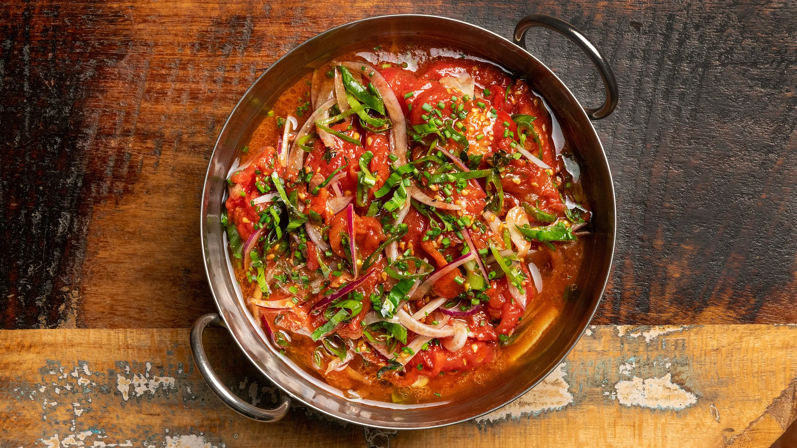

I might be a bit biased in saying this, but, hot take, I wholeheartedly believe that Trinidad has some of the best food in the world. With our food deriving inspiration from both Africa and South Asia, Trinidadian food has a diverse range of influences that results in a large variety in food! Sweet, spicy, tangy, salty, umami–you name it, Trinidad has it! From completely traditional dishes to newly modern takes, there is no lack of flavor when it comes to this food. Here are some of my favorite Trini dishes!
1. Doubles
There is no doubt in my mind when I say that doubles is the most popular street food in Trinidad and Tobago. No matter if you visit a bustling city or a quiet, rural town, there will always be a doubles man traveling with a cart filled with tasty bara (fried dough), curried chickpeas, and various chutneys (condiments or spreads). These can include tamarind sauce, homemade peppa sauce, pickled veggies, or even coconut shavings. Keep in mind, whether you order one or a hundred, they are always called doubles!
2. Roti
You may recognize the food roti from Indian dishes, and you would be correct! Roti does originate from India, but it is one aspect of Indian culture that has stayed constant as indentured workers came to Trinidad. There are many versions of roti, but the two types are called dhalpuri and “buss up shot”. Dhalpuri is roti that is stuffed with ground peas and also filled with either vegetables or meat (chicken, goat, duck, beef, etc). Buss up shot is roti that is “beaten” while being cooked, causing it to rip up.
3. Aloo Pie
Again, the word aloo is derived from the Hindi word for potato, which is exactly what it means in Trinidad too. It is made of a dough that is filled with potatoes that are usually seasoned or spiced. Usually, it is with garlic or culantro, and sometimes with the same condiments that doubles are seasoned with!
4. Pelau

Pelau is a traditional one-pot rice dish with either chicken or pigtail. The chicken is typically cooked first in homemade seasoning and then caramelized. Then, rice with peas and other toppings are added and cooked together with the chicken. A lot of people cook their pelau either “wet” or “dry,” simply referring to how wet the rice is left after cooking.
5. Chow
Chow is more of a treat than a dish, but it’s still an iconic part of Trinidadian food culture. Chow can be made of any fruit or even vegetables (well, in theory, any other food that you want…), but the most common are mango and pineapple. The fruit is then made spicy with ingredients such as culantro and cilantro, scotch, garlic, peppers, and other. The contrast between the sweet taste of the fruit and the spice level of the seasoning makes this a refreshing dessert!
6. Bake and Shark
Now this food is another popular street food, but it is not typically sold in cities or towns, or along the road like doubles are. Instead, this unique sandwich is sold on beaches; it is most notably known on Maracas Beach, which has multiple stores lining the shore selling it!
Bake is just another piece of bara bread, and inside it has fried filets of shark meat along with other toppings like chutneys, pineapple, tomato, lettuce, peppa sauce, and countless other options. Fun fact: this sandwich was labeled as one of the best sandwiches in the world by chef Andrew Zimmern.
7. Tomato Choka
Now this is a great Trini vegan dish! Tomatoes are usually roasted until they get very soft, and then mashed, and then seasonings are added, typically onion, garlic, black pepper or other peppers, cilantro, and others. Then oil is drizzled over the food. Tomato choka is usually eaten with roti, particularly buss up shot! There are actually other chokas you can make with other fruits and vegetables as well.
Of course, there is an infinite amount of dishes that I could talk about, and I would be going on and on until this list reaches the hundreds. But again, these are just my favorites, and they’re all extremely tasty! I hope that everyone can try these dishes at one point in their life, and savor them!